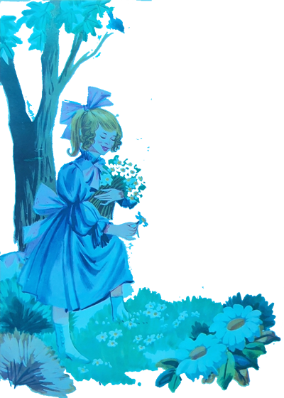
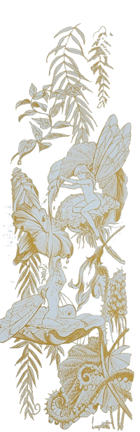
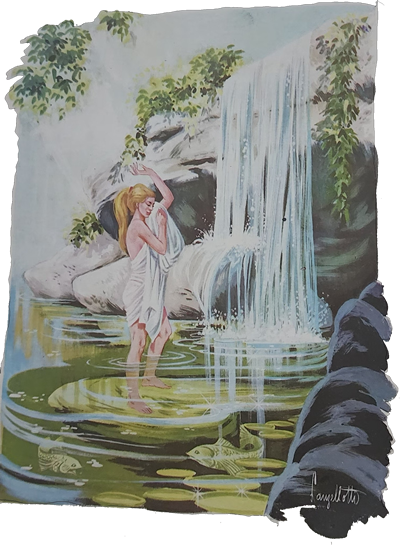
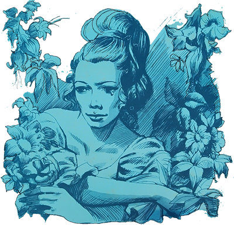
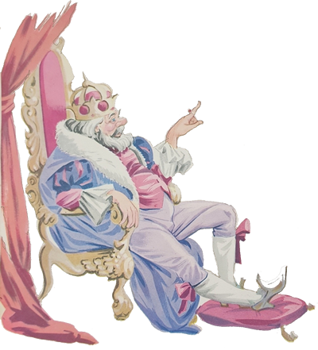
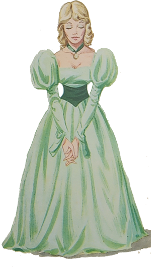
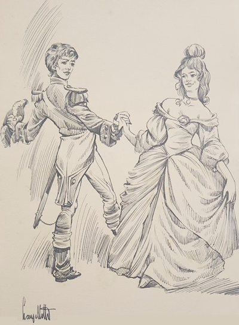
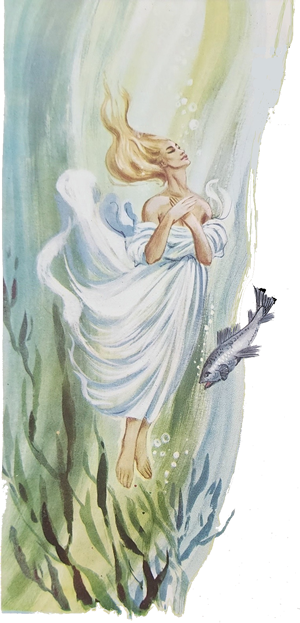

Vamos visitar o Museu de Araxá? – propôs o Arrelia.
Todas as crianças concordaram com entusiasmo, menos Carlinhos, que nutria outras intenções. Fazendo um ar desconsolado, ele dirigiu-se ao Arrelia:
- Eu estava com vontade de brincar um pouco, de dar uma corrida!
- Puxa! – exclamou o Arrelia. Você não pensa noutra coisa? Logo mais tarde poderá brincar. Já que estamos em frente ao museu, não vamos perder a oportunidade. Esse museu é diferente. Estão vendo como o prédio é antigo? Olhem que belo sobrado colonial. Os seus móveis são originais, e a gente, entrando nele, tem a impressão de voltar ao passado. Vale a pena. Seria de grande valor para nossa cultura se houvesse outros museus iguais por todo o Brasil. Assim nossas tradições não morreriam.

Carlinhos começou a ficar interessado. O Arrelia continuou:
- Esse sobrado pertenceu a Dona Bêja. Ela morava aí.
Marisa contemplou o prédio demoradamente e perguntou:
- Morava aí? Nesse palácio? O que ela fazia numa casa tão grande? Nunca vi tantas portas e janelas!
- Foi feita conforme o gosto da época.
- Havia muitas casas assim?
- Muitas não. Dona Bêja era rica! E também bonita!
- Mas que nome engraçado! Dona Bêja!
- Não era esse o nome “deula”.
Não? Não entendi.
Dirigindo-se às crianças, o Arrelia esclareceu:
- Bêja era o apelido carinhoso dado por seu avô.
- E o que significa? Quis saber Carlinhos.
- Vou explicar. A origem desse nome é muito sentimental e bonita. O nome verdadeiro de Dona Bêja era Ana Jacinta de São José. Quando era pequenina, gostava de colher flores. Era a brincadeira da qual mais gostava. Aliás, o seu amor pelas flores continuou por toda a vida. Quando não conseguiam encontrar a menina em casa, era só procurá-la onde houvesse flores. Não falhava. Lá estava ela correndo alegremente entre as flores, colhendo-as.
Seu avô, que sabia observar as coisas com o devido “cuidaudo”, acabou por comparar a neta a um beija-flor. “Essa menina parece um beija-flor!” – dizia ele. Com o tempo, o nome pegou. Ficou conhecida por Beija-flor e mais tarde somente por Bêja para os íntimos e Dona Bêja para os de fora. Não havia outra moça com beleza igual por toda a redondeza. Dizem que gostava de tomar banho numa banheira cheia de leite e também na Fonte da Jumenta, que atualmente se chama Fonte de Dona Bêja. Depois iremos até lá.
Tão grande foi sua influência que conseguiu anexar um bom pedaço de terra que pertencia a Goiás ao Estado de Minas Gerais. É o hoje chamado Triângulo Mineiro. Olhem. Essa é a cama onde ela dormia. Que bela peça antiga, não?
- É mesmo bonita! – concordou Jaci com admiração.
Depois de olhar a cama por todos os lados, Carlinhos perguntou:
- Dona Bêja dormia ao ar livre?
A pergunta do menino fez o Arrelia piscar várias vezes.
- Essa não entendi – disse ele. Por que ela haveria de dormir ao ar livre?
- Ora, não está vendo essa coberta? Acho que era para proteger da chuva.
- Ah! – exclamou o Arrelia, entendendo agora por que Carlinhos lhe fizera tal pergunta. Isso chama-se dossel e não é para proteger da chuva, não.

A expressão de Carlinhos demonstrava claramente o esforço mental que fazia para compreender a finalidade daquela coberta:
- Dossel? E para que serve?
- Para enfeitar. Unicamente para enfeitar. Muitos ricos de antigamente costumavam usar leitos assim.
- Que engraçado!
- Pois é. Cada época com seus costumes.
- Faz tempo que Dona Bêja viveu aqui?
- Faz. Foi no século “passaudo”. Mas vamos apreciar as outras peças deste museu.
O Arrelia e as crianças continuaram sua visita, admirando-se a cada instante com o que encontravam. Depois de um bom tempo, saíram. Pararam novamente diante do casarão para admirá-lo.
- É grande mesmo – considerou Iberê.
- Se é – respondeu o Arrelia. Dona Bêja mandou construí-lo com dois andares, dezesseis cômodos e oito sacadas de frente!
- Arre! Para que tantos cômodos.
- Ela queria uma casa digna de sua riqueza. Esse palácio era famoso pelo luxo com que sua proprietária o mobiliara. Bem, vamos conhecer a cidade. Por estas ruas Dona Bêja costumava passear a cavalo.
- Ela andava a cavalo? – surpreendeu-se Jaci.
- Como não? Contam que ela gostava de por um lindo vestido vermelho e passear “montauda” num garboso cavalo branco.
Após umas voltas pelos arredores, o Arrelia e as crianças seguiram em direção ao lago em que Dona Bêja costumava banhar-se. Ficaram todos encantados com a beleza do lugar. Sentaram-se perto da água. Sérgio começou a arrancar algumas flores e a jogá-las ao lago. O Arrelia observava distraído os círculos que as flores faziam na superfície límpida e tranquila. Decorridos uns minutos, o Arrelia disse ao menino:
- Não vá acordar a princesa do lago, hein?
- Que princesa? – quis saber Sérgio.
- É uma estória muito antiga. Não se refere a esse lago. Lembrei-me dela ao ver você atirando flores à água.
Conta a estória que havia uma princesa muito bonita, assim como Dona Bêja e que também gostava imensamente de flores. Vivia num palácio enorme e maravilhoso. Era bastante feliz. Gostava de passear pelo jardim do palácio, onde passava horas e horas completamente esquecida.

Uma vez ou outra, seu pai costumava dar grandes festas em seu palácio, às quais comparecia a mais rica nobreza. Como a princesa era a mais “boniuta” das moças do lugar, todos os convidados lhe dedicavam a maior atenção. Não havia um que não quisesse dançar com ela.
Um dos maiores prazeres da moça era conversar com as flores. A todas ela conhecia. Sempre que ia ao jardim, não se esquecia de falar com elas, as quais a recebiam com satisfação. Dirigia-se a uma rosa que mal terminara de tomar seu banho de orvalho:
- Bom dia, amiga rosa. Como você está encantadora com essas gotas de orvalho! Parece toda enfeitada de brilhantes!
- Bom dia, princesa. Agradeço-lhe a gentileza. Porém mais bonita está você com esses brilhantes verdadeiros e uma rosa em cada face.
Mais além falava com uma singela violeta:
- Bom dia, amiga violeta. Acho-a encantadora em sua delicada beleza que sempre procura esconder. Louvável simplicidade!
- Mais louvável é a sua modéstia, princesa. T ao linda e importante como é, não se esquiva a conviver conosco, pobres e efêmeras flores.
- Ouça, minha cara violeta. De toda a Natureza, são as flores que merecem meu maior afeto e amizade. Sabe por quê? Porque as flores são flores. Uma rosa é uma rosa e uma violeta é uma violeta. A gente sabe o que esperar das flores. Se tem perfume, dão o seu perfume; se tem beleza, entregam sua beleza. Se são humildes, não disfarçam sua humildade. Um pássaro canoro pode negar-se a cantar e fugir quando menos se espera. E assim também são os outros seres. Tem sempre duas aparências: a que se vê e a que não se vê; a que nos entregam e a que guardam para si. Não se pode prever sua reação.
As flores ficavam muito contentes com os elogios tributados pela princesa.
Toda vez que ela chegava ao jardim era uma festa. Não havia uma flor que não quisesse falar com ela. Os girassóis até se esqueciam de acompanhar o Sol, tão embevecidos ficavam admirando a princesa.
Agora, se havia coisa que a moça não suportava era saber que alguma flor fora “cortauda”. Seus súditos tinham ordens rigorosas para não cortar nem deixar que alguém cortasse uma flor. Mesmo assim, de vez em quando suas ordens eram desobedecidas, e ela encontrava uma haste solitária, revelando que sua vontade não havia sido cumprida. Como a princesa ficava triste ao ver que uma flor fora “cortauda”! Corria por todos os lugares a fim de ver se encontrava a flor. Se era bem sucedida, colocava a pobre vítima num copo de água para minorar-lhe o sofrimento.
- Isso é que era gostar de flores, não, Arrelia? – comentou Marisa.
- É “verdaude”. Gostava mesmo.
Mas o tempo foi passando. Numa linda manhã ensolarada, a princesa estava passeando no jardim e conversando com as flores quando notou que a rosa mais linda havia sido “roubauda”. Como ficou triste. Por que haviam feito aquilo? Quem tivera tanta maldade? Começou a procurar a flor ansiosamente. Era a rosa mais bela e mais sábia que já conhecera! Por fim deu com ela abandonada na beira de um caminho. Apanhou-a e correu para colocá-la num copo de água mas a rosa já estava agonizante.
Antes de morrer, ela disse à princesa numa voz tão débil que obrigou a moça a encostá-la no ouvido:
- Isto foi acontecer-me justamente quando eu tinha uma coisa muito importante oara contar-lhe. Não sei se as forças que me restam darão para tanto.
Com muito esforço, a rosa começou a contar o que sabia, quase num sussurro:
- Pouco antes de eu ser cortada, seu pai estava conversando com outro homem perto de mim. As outras flores dormiam. Era um homem feio, velho e mau, porém riquíssimo, e como seu pai precisa de dinheiro, prometeu-lhe que você se casará com ele.

A princesa ficou aflita:
- O que farei? Devo fugir?
- Não adiantará – respondeu a flor. Seu pai conseguirá encontrá-la.
- O que devo fazer então?
- Já vou dizer-lhe. Deixe-me contar-lhe primeiro o que aconteceu. O homem que desejava casar-se com você resolveu, para fingir ser agradável, dar-lhe uma flor. E fui a escolhida. Arrancou-me sem piedade da minha haste e vinha-me trazendo quando seu pai se lembrou que você não permite tal coisa. Informado a respeito, seu pretendente jogou-me onde você me encontrou.
- Diga-me agora o que devo fazer! Por favor!

Após descansar alguns momentos a fim de tomar fôlego, a rosa continuou:
- Só há um recurso para você escapar de um casamento assim indesejável: quando perceber que realmente ele vai ser consumado, dirija-se ao lago, pense em mim e atire-se às águas. Acautele-se porém para que ninguém a veja.
A princesa ficou “apavorauda”. Atirar-se às águas do lago? Ela não queria morrer! Ainda mais “afogauda!” A rosa tranquilizou-a:
- Não morrerá, princesa. Apenas ficará adormecida. Ficará adormecida no fundo do lago até que um dia aparecerá um príncipe. Ele se sentará à beira do lago e atirará uma flor à água. Assim que tal acontecer, você se despertará. Casar-se-á com o príncipe e serão felizes para sempre.
Pouco depois de haver falado a rosa expirou. Morreu nas mãos da princesa e ela ficou muito triste.
Uns dias mais tarde, estando a moça sentada em seu belo jardim, um criado foi procurá-la:
- Com sua permissão, princesa.
- Sim? O que deseja?
- O rei, seu pai, pede-lhe para ir ter com ele imediatamente.
Ela mostrou-se contrariada e perguntou:
- O que o meu pai deseja de mim?
- De nada sei, princesa. Apenas recebi ordens para dizer-lhe que vá à sua presença sem demora.
- Está bem. Pode ir que irei em seguida.
O criado deixou-a sozinha e ela ficou uns minutos refletindo tristemente, pois sabia qual era a notícia que a esperava. Levantou-se finalmente e tomou o caminho do palácio.
Encontrou o rei com uma expressão “preocupauda”. Não devia ser pequeno o seu problema. Dirigiu-se a ele:
- Mandou-me chamar, meu pai?

- Sim, minha filha. Preciso falar-lhe. Trata-se de um assunto muito importante que diz respeito a nós dois.
- E do que se trata? – perguntou a princesa, estremecendo-se.
- Já vai saber. Sente-se.
A princesa sentou-se, e o rei, procurando sorrir, começou a esclarecer-lhe o motivo daquela entrevista:
- Embora não seja do conhecimento de quase ninguém, encontro-me em sérias dificuldades financeiras. Os cofres do palácio estão quase vazios. Só existe uma pessoa que poderá ajudar-me. É um rico senhor estrangeiro que pede, porém, em troca de seu favor a mão de minha filha.
- Mas meu pai! Não haverá outro modo? Nem o conheço!
- Não, minha filha. Tem de ser assim.
A moça lembrou-se das palavras da rosa e resolveu esperar até ao último instante para atirar-se ao lago.

- E quando irei conhece-lo? – perguntou com ar de enfado.
- Hoje à noite. Preparei uma festa, um baile, para o grande acontecimento.
Terminada a entrevista, a moça retirou-se e fechou-se no seu quarto completamente desanimada. Ia ser a festa mais triste de sua vida. Sabia que ia ser assim.
As horas passaram rapidamente. Vocês sabem que quando a gente não quer que uma coisa chegue, o tempo passa “depreussa”, não é mesmo? A princesa arrumou-se, muito sem vontade. E seguiu para os salões que estavam esplendidamente iluminados.
O baile já havia começado. As mais belas damas e os homens mais importantes do lugar encontravam-se ali reunidos. A orquestra tocava maravilhosamente e em tudo havia alegria. Só não havia no coração da princesa. Ela estava mis triste do que um dia sem Sol. Esforçando-se para que ninguém percebesse sua desolação, ela entrou nos enormes e floridos salões, onde foi recebida com entusiasmo e admiração. A orquestra parou de tocar, os convidados de dançar . . . Ela estava tão “boniuta” que parecia mentira. Logo um criado a levou ao rei e o baile recomeçou.
Junto do rei estava um velho que dava a impressão de haver reunido em sua pessoa toda a feiura do mundo. Corcunda, vesgo, com uma brilhante careca . . .
O rei disse à princesa:
- Este será o seu futuro esposo, minha filha.
O noivo soletrou algumas palavras que mal e mal a moça conseguiu compreender. Também era gago! “Bem – pensou ela – só resta saber se é bondoso ou mau coo disse a rosa”. Logo viu que era mau. Seu pai explicou ao pretendente:
- O senhor vai estranhar no começo porque minha filha é uma grande sonhadora. Vive na fantasia. Imagine que conversa com as flores!
O homem respondeu com uma risada horrível, mas tão tétrica que até o rei ficou arrepiado, e com muito custo, por ser bastante gado, disse que aquele capricho de criança seria curado pelo tanque de lavar roupa e pelo trabalho da cozinha. O rei ficou “chocaudo” com a maldade de seu futuro genro. Como, porém, precisava dele, disfarçou sua surpresa o melhor que pode e sugeriu que fossem danças.
A princesa, fazendo esforço para não desmaiar de tanto desgosto, alegou que estava com muita sede e que ia tomar um copo de água. O rei quis chamar um criado mas a princesa argumentou que seria mais rápido ela ir pessoalmente. Que esperassem um instante. Os dois ficaram à sua espera até que o rei, estranhando a demora, mandou vários criados verificarem o motivo. Dentro em pouco o palácio estava em polvorosa. A princesa sumira! Todos os lugares do palácio foram vasculhados. Depois não escapou um palmo do reino. Procuraram em todos os lugares possíveis. Nada. A princesa desaparecera como por encanto. Nunca mais foi encontrada.

Ela havia feito o que aquela rosa lhe recomendara: verificando que ninguém a observava, atirou-se ao lago. Adormeceu imediatamente e, afundando com suavidade, chegou ao fundo e lá continua até hoje, à espera do príncipe que deverá atirar uma flor à água para quebrar o encantamento. Eu disse que o lago não é esse mas não tenho muita certeza, sabem?
- Imaginem! E se a princesa aparecesse agora e o Sérgio fosse obrigado a casar com ela? – disse Carlinhos, pondo-se a rir como louco.
Todos começaram também a caçoar do menino, inclusive o Arrelia, que o chamou de “Príncipe Sérgio”. O menino ficou vermelho de raiva. Olhou para Carlinhos e disse-lhe por entre os dentes:
- Foi você quem começou, não foi? Pois tome cuidado que não me custa atirá-lo ao lago e transformá-lo numa princesa adormecida, hein?
Os outros passaram a caçoar de Carlinhos depois que o Arrelia comentou:
- Que bela princesa ele daria! Não quero nem pensar!